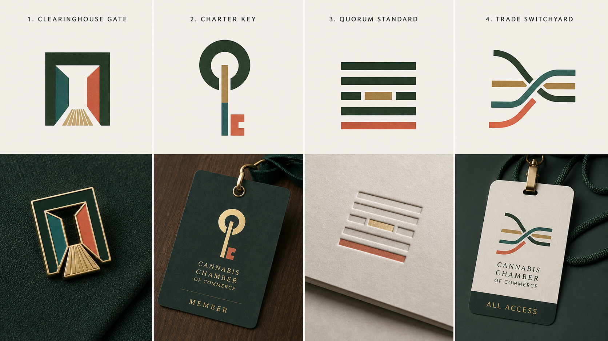

Clearinghouse Gate
Capital MarketsA threshold built from vertical blocks and a crossing settlement bar. It carries business access, trust, and serious commerce.
Gate
Infrastructure
Member Badge
D2 remains the only approved route. This page does not replace, edit, or reinterpret D2.
No concept on this page is carrying forward from the current review. Keep as historical evidence only.
Use the separate minimal badge exploration for the same-direction nested C idea.
A threshold built from vertical blocks and a crossing settlement bar. It carries business access, trust, and serious commerce.
A contemporary ceremonial key that turns membership into access without using D2's radial C structure.
A compact civic standard built from upright bars around a decision field. It can feel official without becoming old chamber clip art.
Angular route-selection lanes that frame the Chamber as the system for finding the right market path.
A premium stem cross-section abstraction. It gives a cannabis-adjacent source without turning into a leaf.
A linear representation mark where distinct voices become one organized industry signal.

This batch tests Clearinghouse Gate, Charter Key, Quorum Standard, and Trade Switchyard as separate challengers. None are approved. They are intentionally outside the D2 three-C-to-dot structure.
Charter Key, Proof Tab, Member Rivet, and Standards Mint as isolated marks plus enamel pin, credential, stationery, and certificate stamp applications.
Clearinghouse Gate, Trade Switchyard, Access Keyway, and Exchange Rail as serious market-access and economic-infrastructure marks.
Quorum Standard, Market Charter Seal, Quorum Line, and Docket Tab as modern civic authority routes without legal or lobbying cliches.
Stem Aperture, Seed Ledger, Bast Fiber Standard, and Caliper Seed as subtle cannabis-adjacent systems without leaf symbolism.
D2 is still the approved route because it already feels premium, physical, member-worthy, and specific. Any challenger must prove comparable pin, credential, and stationery quality without borrowing the three-C-to-dot structure.